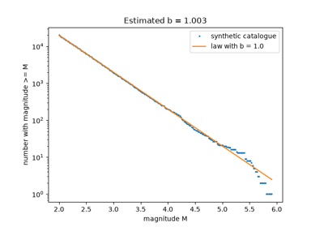
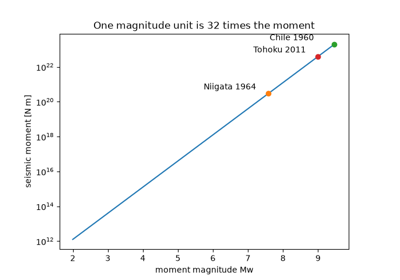

Breakthroughs in Seismology#
Seismology began as the theory of waves in elastic solids, decades before
there were instruments to record them. Once seismographs spread around 1900,
arrival times revealed the crust, the core and the inner core within less
than 30 years. The same records gave the first earthquake scales and the
statistics of aftershocks and catalogues. After 1960, wave theory and
earthquake statistics met in the seismic moment, a physical measure of
earthquake size, and travel times were fitted by a single reference Earth.
This chronology traces the results behind earthsciencekit.seismology.
Every example uses deterministic synthetic inputs or rounded published
values; none inverts real records.
1829 – Poisson’s Two Elastic Waves#
Siméon Denis Poisson showed that the equations of an elastic solid allow two kinds of wave, a faster compressional wave and a slower one transverse to the direction of travel. For a solid whose two Lamé constants are equal, the speed ratio is \(\sqrt{3}\) and Poisson’s ratio is 1/4, close to many crustal rocks. Without rigidity the shear wave disappears, which later showed that the outer core is liquid.
Implementation: p_wave_speed(),
s_wave_speed() and
poisson_ratio().
References: S.-D. Poisson, “Mémoire sur l’équilibre et le mouvement des corps élastiques,” Mémoires de l’Académie Royale des Sciences de l’Institut de France 8 (1829): 357-570.
1885 – Rayleigh’s Surface Waves#
Lord Rayleigh found a third wave, confined to the free surface of an elastic half-space and decaying with depth. Its speed is the root of a cubic that depends only on Poisson’s ratio, about 0.92 of the shear speed in a Poisson solid. He predicted that, because it spreads in two dimensions rather than three, it would dominate distant earthquake records, as it does.
Implementation: rayleigh_wave_speed()
(new). The tests check the root against Rayleigh’s secular equation and
Viktorov’s approximation.
References: Lord Rayleigh, “On waves propagated along the plane surface of an elastic solid,” Proceedings of the London Mathematical Society 17 (1885): 4-11.
1894 – Omori’s Aftershock Decay#
Fusakichi Omori counted the aftershocks of the 1891 Nobi earthquake and found that their rate fell as \(K/(t + c)\). The total number therefore grows only logarithmically with time, and a sequence can last for decades. Tokuji Utsu generalized the exponent to \(p\), usually between 0.9 and 1.5, in 1961.
Implementation: omori_rate(), in Utsu’s
modified form. The example checks the late-time slope and the logarithmic
count.
References: F. Omori, “On the after-shocks of earthquakes,” Journal of the College of Science, Imperial University of Tokyo 7 (1894): 111-200.
1909 – Mohorovičić’s Discontinuity#
On records of the Kupa Valley earthquake of 8 October 1909, Andrija Mohorovičić identified two P phases. Close to the source the direct wave came first, but farther out a faster phase overtook it. He explained it as a wave refracted along a boundary where the speed jumps, at a depth of about 54 km. The crossover distance fixes that depth, and the boundary under every continent and ocean now bears his name.
Implementation: travel_time(),
head_wave_travel_time() (new) and
crossover_distance() (new).
References: A. Mohorovičić, “Potres od 8. X 1909,” Godišnje izvješće Zagrebačkog meteorološkog opservatorija za godinu 1909 9, no. 4 (1910): 1-56.
1910 – Reid’s Elastic Rebound#
Harry Fielding Reid compared triangulation surveys across the San Andreas fault from before and after the 1906 San Francisco earthquake. He concluded that the crust on either side bends elastically while the fault is locked, storing the far-field motion as strain. The earthquake releases it in a sudden slip of several metres, and the cycle starts again.
Implementation: simulate_oscillator(),
used in the example for the coseismic release of the stored offset.
References: H. F. Reid, The Mechanics of the Earthquake, vol. 2 of The California Earthquake of April 18, 1906: Report of the State Earthquake Investigation Commission (Washington: Carnegie Institution of Washington, 1910).
1911 – Love Waves#
Seismograms showed large horizontal shear motions that Rayleigh waves could not explain. Augustus Edward Hough Love showed that shear waves polarized parallel to the surface can be trapped in a slow layer over a faster half-space. Their speed depends on the period: short waves travel at the speed of the layer and long waves at that of the half-space. That dispersion became a standard way to measure the thickness of the crust.
Implementation: love_wave_angular_frequency()
(new), the fundamental mode. The tests substitute it back into the
dispersion relation.
References: A. E. H. Love, Some Problems of Geodynamics (Cambridge: Cambridge University Press, 1911).
1914 – Gutenberg’s Core Shadow#
Beno Gutenberg located the boundary of the Earth’s core at a depth of about 2900 km, within a few kilometres of the modern value. Waves that enter a core slower than the mantle bend towards the centre. Direct P waves therefore fade near 103 degrees from the source, and core waves return only beyond about 143 degrees, leaving a shadow zone between. On a sphere Snell’s law becomes the conservation of the ray parameter \(r \sin i / v\).
Implementation: ray_parameter() (new).
The example traces straight rays through a two-shell toy Earth.
References: B. Gutenberg, “Über Erdbebenwellen. VII A. Beobachtungen an Registrierungen von Fernbeben in Göttingen und Folgerungen über die Konstitution des Erdkörpers,” Nachrichten von der Gesellschaft der Wissenschaften zu Göttingen, Mathematisch-Physikalische Klasse (1914): 125-176.
1919 – Zoeppritz’s Reflection Coefficients#
Karl Zoeppritz derived how a plane wave divides into reflected and transmitted P and S waves at a boundary between two elastic media. His equations (published after his death) underlie reflection seismology. At normal incidence they reduce to the contrast in impedance, density times speed. The pressure transmission can then exceed one, but the energy fractions still sum to one.
Implementation: seismic_impedance(),
reflection_coefficient() and
transmission_coefficient(), at normal
incidence only.
References: K. Zoeppritz, “Erdbebenwellen VII. VIIb. Über Reflexion und Durchgang seismischer Wellen durch Unstetigkeitsflächen,” Nachrichten von der Gesellschaft der Wissenschaften zu Göttingen, Mathematisch-Physikalische Klasse (1919): 66-84.
1935 – Richter’s Magnitude Scale#
Charles Richter ranked southern California earthquakes by the logarithm of the peak amplitude on a standard Wood-Anderson seismometer, corrected for distance. Magnitude 3 is a trace of 1 mm at 100 km, and each unit is ten times the amplitude. It was the first instrumental measure of earthquake size, and every later magnitude was calibrated against it.
Implementation: local_magnitude()
(new), with Hutton and Boore’s 1987 distance correction in place of
Richter’s table.
References: C. F. Richter, “An instrumental earthquake magnitude scale,” Bulletin of the Seismological Society of America 25 (1935): 1-32.
1936 – Lehmann’s Inner Core#
Inge Lehmann noticed weak P arrivals inside the core shadow zone, where none should be. She explained them with an inner core in which waves travel faster than in the outer core. Rays that meet it beyond the critical angle are totally reflected and emerge in the shadow. Its radius, about 1220 km, was later fixed by reflections and free oscillations.
Implementation: critical_angle(). The
example shows that post-critical reflections from a toy inner core cover the
shadow zone.
References: I. Lehmann, “P’,” Publications du Bureau Central Séismologique International, Série A, Travaux Scientifiques 14 (1936): 87-115.
1944 – Gutenberg and Richter’s Frequency-Magnitude Law#
Beno Gutenberg and Charles Richter counted California earthquakes by magnitude and found that the number at or above magnitude \(M\) falls as \(10^{a - bM}\), with \(b\) close to 1. Each magnitude unit brings about ten times fewer events. The law is still the starting point of seismic hazard estimates.
Implementation: gutenberg_richter(). The
example recovers \(b\) from a synthetic catalogue with Aki’s 1965
maximum-likelihood estimator.
References: B. Gutenberg and C. F. Richter, “Frequency of earthquakes in California,” Bulletin of the Seismological Society of America 34 (1944): 185-188.

Gutenberg and Richter’s frequency-magnitude law (1944)
1953 – Ricker’s Wavelet#
Norman Ricker studied how a sharp pulse changes shape as it travels through absorbing rock and proposed a symmetric wavelet, the second derivative of a Gaussian, as its stable form. It has zero mean, a unit peak and a spectrum that peaks at one frequency. It remains the default source pulse in synthetic seismograms.
Implementation: ricker_wavelet(). The
example checks the zero crossings, the zero mean and the spectral peak.
References: N. Ricker, “The form and laws of propagation of seismic wavelets,” Geophysics 18 (1953): 10-40.
1964 – Knopoff’s Q#
Leon Knopoff reviewed the evidence that rocks lose a nearly constant fraction of wave energy per cycle over a wide band of frequencies. With a constant quality factor \(Q\), amplitude decays as \(e^{-\pi f t / Q}\), so high frequencies die first. The logarithm of a ratio of two spectra is then linear in frequency, and its slope measures \(Q\).
Implementation: attenuated_amplitude().
The example recovers \(Q\) by the spectral-ratio method.
References: L. Knopoff, “Q,” Reviews of Geophysics 2 (1964): 625-660.
1966 – Aki’s Seismic Moment#
Keiiti Aki measured the long-period waves of the 1964 Niigata earthquake and showed that they fix one number, the seismic moment: rigidity times fault area times average slip. Unlike a magnitude read from one instrument, the moment is a physical quantity that does not saturate for great earthquakes. Aki’s Niigata value was about \(3 \times 10^{20}\) N m.
Implementation: seismic_moment().
References: K. Aki, “Generation and propagation of G waves from the Niigata earthquake of June 16, 1964. Part 2. Estimation of earthquake moment, released energy, and stress-strain drop from the G wave spectrum,” Bulletin of the Earthquake Research Institute 44 (1966): 73-88.
1979 – Hanks and Kanamori’s Moment Magnitude#
Thomas Hanks and Hiroo Kanamori defined a magnitude from the seismic moment, \(M_w = \tfrac{2}{3}\log_{10} M_0 - 10.7\) with the moment in dyne cm. It agrees with the older scales where they work and keeps growing for great earthquakes. Each magnitude unit multiplies the moment by \(10^{1.5}\), about 32. In SI units the IASPEI standard writes it as \(\tfrac{2}{3}(\log_{10} M_0 - 9.1)\).
Implementation: moment_magnitude() and
moment_from_magnitude().
References: T. C. Hanks and H. Kanamori, “A moment magnitude scale,” Journal of Geophysical Research 84 (1979): 2348-2350.

Hanks and Kanamori’s moment magnitude (1979)
1981 – Dziewonski and Anderson’s PREM#
Adam Dziewonski and Don Anderson fitted a single spherically symmetric model of the Earth, the Preliminary Reference Earth Model, to body-wave travel times, surface-wave dispersion, free oscillations and the Earth’s mass and moment of inertia. Its tables of speed and density against depth are still the standard reference. Integrating slowness through them predicts arrival times.
Implementation: vertical_travel_time()
(new), exact for speeds linear between tabulated depths. The example
integrates a rounded PREM P-wave profile from the surface to the centre.
References: A. M. Dziewonski and D. L. Anderson, “Preliminary reference Earth model,” Physics of the Earth and Planetary Interiors 25 (1981): 297-356.
See also#
Seismology: units, equations and validation for conventions, equations and checks.